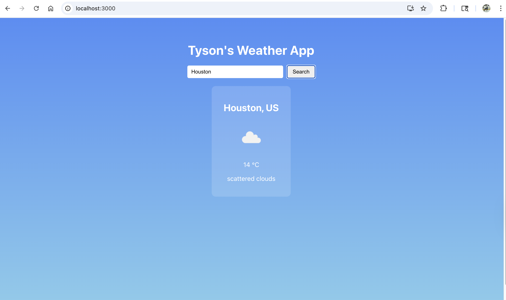
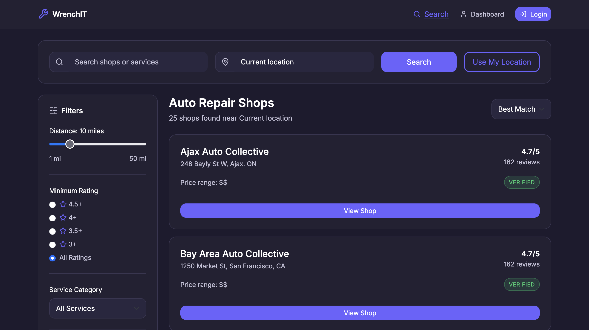

Full Stack Developer
How you do anything, is how you do everything. I bring that mindset to everything I do in life, and I give my full effort to deliver work that is thoughtful, consistent, and built with care.
Hello,
I’m Tyson Ward-Dicks, a collaborative and dependable teammate who enjoys helping people bring ideas to life. I’m known for clear communication, steady follow-through, and keeping projects organized so everyone feels confident about the next step.
Whether I’m working with a professor, a client, or a team, I focus on making the process smooth and the outcome something we can all be proud of. I care about building trust, setting expectations early, and delivering work that reflects care, consistency, and respect for the people using it.
Career Summary
I am a Full Stack Developer focused on building clean, reliable, and user-friendly web experiences. I bring a calm, organized approach to projects and take ownership of delivering work that is clear, thoughtful, and complete. I value communication and keep stakeholders aligned through updates and follow-through. I enjoy turning ideas into simple, usable solutions that feel intentional and polished. My goal is to help clients and teams move faster with work they can trust and be proud of.
My Projects
React Weather App

Developed a React-based web application that displays real-time weather data for any city using a public API. Features include city search, temperature, weather conditions, and dynamic icons.
Technologies used: React, JavaScript (ES6+), CSS, Fetch API, OpenWeatherMap API.
Auto Service Finder Application

Developed a full-stack web application with a team to help users find and compare automotive service providers. Features include user authentication, shop search and comparison, saved locations, reviews, and receipt-based service verification.
Technologies used: React (Vite), Java, PostgreSQL, Keycloak, Docker, Google Maps API.
Professional Summary
Skills & Abilities
Front-End
HTML, CSS, JavaScript
Back-End
Python, Java, Node.js, PHP, C#
Database
MySQL, PostgreSQL, MongoDB
Marketable
Project Management, Critical Thinking, Problem Solving
Professional Accomplishments
I helped tech 2 famous celebrity events for a full day.
Academic Credentials
Program: Computer Science
Institution: George Brown College
Expected Graduation: 2026
Career Philosophy
Write 1–2 paragraphs about your motivations, beliefs about your work, and your career goals in the technology field.